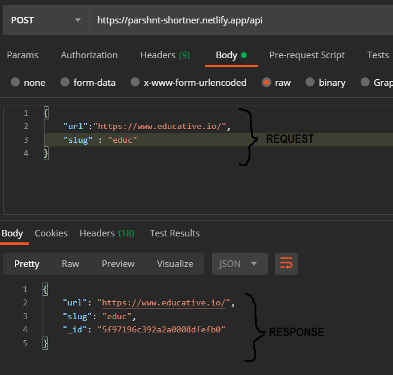

You can add a new URL by making a POST request to the endpoint present here. Add the URL and Slug inside the request Body. See below.
Once the URL is added successfully, append your slug-name to this website's path and
you'll be redirected to URL.
Visit https://parshnt-shortner.netlify.app/edu and you'll be redirected to https://www.educative.io
Due to free tier limitations this function runs on us-east-1 AWS Lambda region, expect delays as you move away geography.
Better & functional front-end.